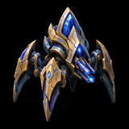
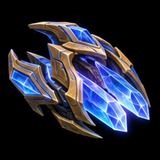
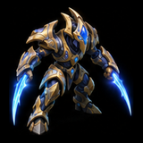
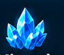

60-Second Game Plan
Default matchup plan vs bio

Blink Stalkers pressure natural / third

Warp Prism or Zealot warp-in hits workers

Attack whichever base he leaves exposed
Color + icon legend

MineralsVespene gas👤 SupplyHow to beat Tom, phase by phase
Produce Probes uninterrupted. Scout his Command Center and first production. Set a ramp wall; avoid greed if he has no natural CC.
Finish Warp Gate and Blink; defend a Reaper with your first fighting unit. Get map vision with a forward Pylon, Observer, or spotter.
Stalkers pressure a flank but never trade into Stimmed bio. Prism circles into the main; warp in 2–4 Zealots or drop 2 Adepts on SCVs.
Take and saturate the third. Research Charge; warp Chargelots at undefended bases. Add Colossus splash; keep an Observer for Widow Mines.
65–80 Probes on 3–4 bases. Attack with a protected splash core only when his bio is out of position; keep Prisms going behind.
The 3-part win condition
Protoss Units
Your tools for pressure, mobility, and control. Costs are minerals / gas / supply.
Protoss Buildings
Cost, purpose, and what each one unlocks.
Protoss Tech Tree
Read top to bottom. Each building branches into what it unlocks; gold text = units it produces.
Core upgrades: what they do & when
Default build vs Tom's bio: 3-Gate Blink → Warp Prism
Supply values assume 12 workers, Faster speed. Keep making Probes, Chrono Boost, add Pylons before supply blocks. This is not a one-base all-in.
Two more builds to learn
Use if Tom keeps hitting with a fast 2-base Stim army. Same 14/15/16/20 opening, Robo at ~30 (Observer if mines/cloak likely), Robo Bay + Colossus at ~35–45, then Thermal Lance. Grow to 3–5 Gateways, Charge, +1, 2 Colossi, safe third. If he masses Vikings, pivot part of splash into Storm.
14–22 Pylon → Gateway → Gas → Core/Nexus. Stargate + Oracle after Core: scout Zerg tech, hit undefended Drones, leave before Queen/Spore crossfire. Third Nexus when safe; Twilight/Robo based on scouting. Roach → Immortal; Hydra → Colossus/Storm; Muta → Phoenix/Stalker.
Rock-paper-scissors quick read
Protoss golden rules
Terran Guide
What Tom can build, what is dangerous, and how Protoss should answer it.
Terran Units
Role · cost · danger · Protoss answer.
Terran Buildings
Terran Tech Tree
What bio is trying to do (MMM)
MMM = Marine + Marauder + Medivac: a mobile, efficient army that presses, trades, and keeps you reacting.
Terran build order decoded
A common bio 1-1-1 macro pattern. Scout to confirm Tom actually follows it.
Terran upgrades → your response
What gives Tom away
How to Counter Terran Tactics
Recognize it fast. Answer it cleanly. Punish the weakness.
Tom-specific win plan
Matchup flowchart: if Tom does X, you do Y
Scouting cheat sheet
Expansions + timing goals
Rock-paper-scissors: key matchups
Zerg Guide
Swarm units, tech paths, dangers, and how Protoss should counter them.
Zerg Units
* = morph: the listed cost is the extra price on top of the precursor unit.
Zerg Buildings
Zerg Tech Tree
Zerg build order decoded
Common Hatch-first pattern on the 12-worker start: 16 Hatch / 18 Extractor / 17 Pool. Specifics vary.
Protoss versus Zerg: what beats what
How Protoss beats Zerg
Watch for
Quick Match Card + Hotkeys
What to remember while the game is live.